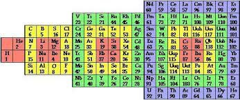
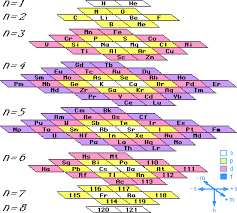

Triadas de Döbereiner (1817)
Octavas de Newlands
Meyer (1870)
Diagrama de Spring (1881)
Crookes (1898)
Erdmann (1902)
Modelo de Edgar Emerson
Henry Moseley (1913)
Harkins y Hall (1916)
Nodder (1920)

Friend´s (1925)
Modelo de Charles Janet.
Stephenson (1929)
Rixon (1933)
Modelo de Zmaczynski
Modelo de Clark

Modelo de Scheele
Modelo por Theodor Benfey
Mendeleiv (1696)
Modelo de Albert Tarantola (1970)
Si el orden de llenado de los orbitales electrónicos da lugar a una clasificación como la de arriba, el orden de "vaciado" de los orbitales electrón por electrón no da la misma clasificación, sino una diferente. Albert Tarantola recopiló las energías de ionización de los elementos y organizo esta otra tabla:
Modelo de Pierre Demers (1995)

Modelo de Ed Perley
Los metales de transición comienzan en el grupo III y acaban en el II gracias a que el grupo VIII contine las tríadas y los gases nobles. Los lantánidos no se disgregan en la capa correspondiente porque en la tabla tradicional están todos en el mismo grupo. Solo están dibujados los elementos hasta el número 51.
Modelo de Timmothy
